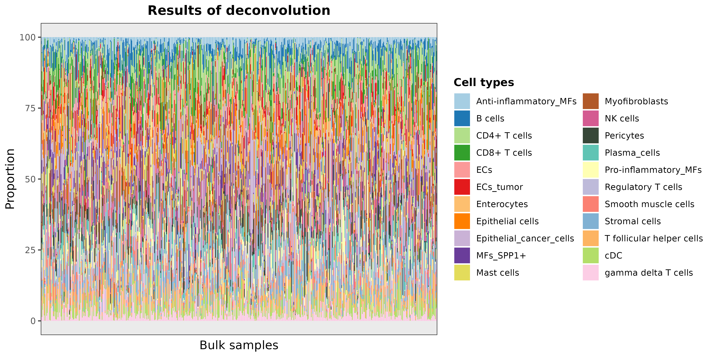
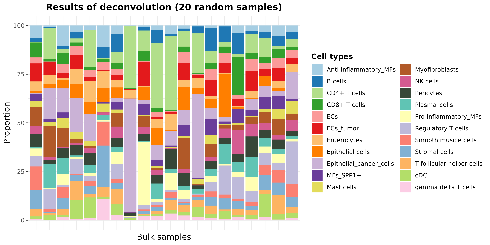
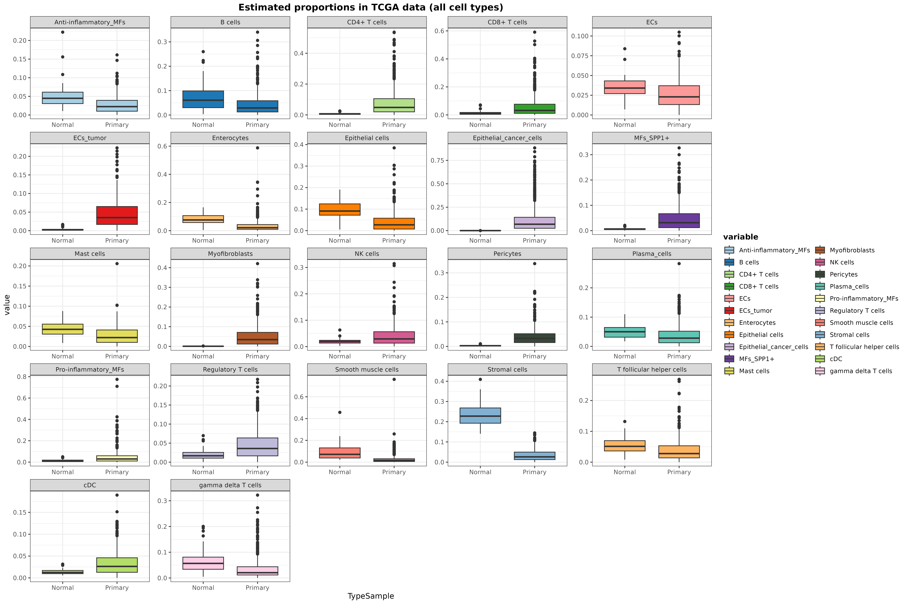
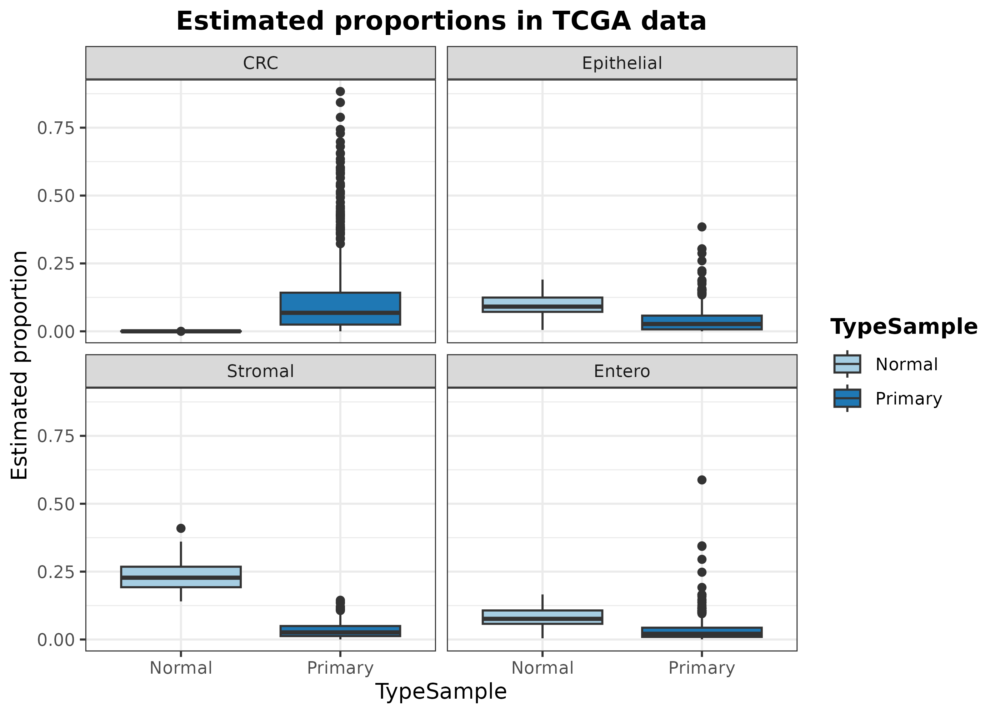
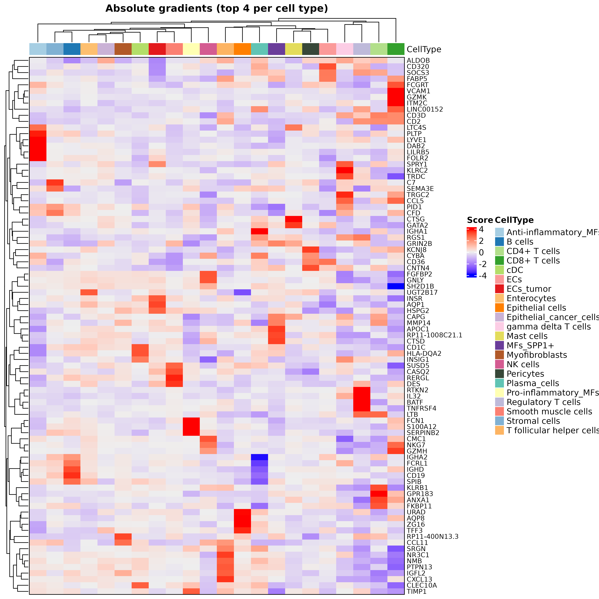

vignettes/realModelWorkflow-hq.Rmd
realModelWorkflow-hq.RmdIn this example, we are going to reproduce the pre-trained model
DDLS.colon.lee available at the
digitalDLSorteRmodels R package. It was trained on data
from Lee et al. (2020) (GSE132465,
GSE132257
and GSE144735),
and consist of ~ 100,000 cells from a total of 31 patients including
tumoral and healthy samples. These cells are divided into 22 cell types
covering the main ones found in this kind of samples:
Anti-inflammatory_MFs (macrophages), B cells,
CD4+ T cells, CD8+ T cells, ECs
(endothelial cells), ECs_tumor, Enterocytes,
Epithelial cells, Epithelial_cancer_cells,
MFs_SPP1+, Mast cells,
Myofibroblasts, NK cells,
Pericytes, Plasma_cells,
Pro-inflammatory_MFs, Regulatory T cells,
Smooth muscle cells, Stromal cells,
T follicular helper cells, cDC (conventional
dendritic cells), and gamma delta T cells. The expression
matrix only contains 2,000 genes selected by
digitalDLSorteR when the model was created to save time
and RAM. Thus, in this example we will set the parameters related to
gene filtering to zero.
suppressMessages(library("SummarizedExperiment"))
suppressMessages(library("SingleCellExperiment"))
suppressMessages(library("digitalDLSorteR"))
suppressMessages(library("ggplot2"))
suppressMessages(library("dplyr"))
if (!requireNamespace("digitalDLSorteRdata", quietly = TRUE)) {
remotes::install_github("diegommcc/digitalDLSorteRdata")
}
suppressMessages(library("digitalDLSorteRdata"))
suppressMessages(library("dplyr"))
suppressMessages(library("ggplot2"))We are also going to load bulk RNA-seq data on colorectal cancer patients from the The Cancer Genome Atlas (TCGA) program (Koboldt et al. 2012; Ciriello et al. 2015). When building new deconvolution models, we recommend loading both the single-cell RNA-seq reference and the bulk RNA-seq dataset to be deconvoluted at the beginning so that digitalDLSorteR can choose only genes actually relevant for the deconvolution process.
data("SCE.colon.Lee")
data("TCGA.colon.se")
# to make it suitable for digitalDLSorteR
rowData(TCGA.colon.se) <- DataFrame(SYMBOL = rownames(TCGA.colon.se))Note: Please, note that here
sc.filt.genes.cluster = FALSE and
sc.log.FC = FALSE because we are providing with data
already preprocessed. However, we recommend keeping
sc.filt.genes.cluster = TRUE and
sc.log.FC = TRUE in regular situations, as
digitalDLSorteR will filter genes according to their
logFC.
DDLS.colon <- createDDLSobject(
sc.data = SCE.colon.Lee,
sc.cell.ID.column = "Index",
sc.gene.ID.column = "SYMBOL",
sc.cell.type.column = "Cell_type_6",
bulk.data = TCGA.colon.se,
bulk.sample.ID.column = "Bulk",
bulk.gene.ID.column <- "SYMBOL",
filter.mt.genes = "^MT-",
sc.filt.genes.cluster = FALSE,
sc.log.FC = FALSE,
sc.min.counts = 0,
sc.min.cells = 0,
verbose = TRUE,
project = "Colon-Cancer-Project"
)## === Processing bulk transcriptomics data## - Removing 2568 genes without expression in any cell## 'as(<dgCMatrix>, "dgTMatrix")' is deprecated.
## Use 'as(., "TsparseMatrix")' instead.
## See help("Deprecated") and help("Matrix-deprecated").## - Filtering features:## - Selected features: 54918## - Discarded features: 1599## ## === Processing single-cell data## - Filtering features:## - Selected features: 2000## - Discarded features: 0##
## === No mitochondrial genes were found by using ^MT- as regrex##
## === Final number of dimensions for further analyses: 2000After loading the data, we have a DigitalDLSorter object
with 2,000 genes and both the single-cell RNA-seq used as reference and
the bulk RNA-seq data to be deconvoluted.
DDLS.colon## An object of class DigitalDLSorter
## Real single-cell profiles:
## 2000 features and 106364 cells
## rownames: ADAMTS15 LY6G5B FBXO17 ... FBXO17 HLA-DPA1 ACKR3 CORIN
## colnames: SMC01-T_GGACAAGAGCTGGAAC SMC03-T_GCAAACTCAGCGATCC SMC05-N_TACTCATCAGATGAGC ... SMC05-N_TACTCATCAGATGAGC SMC06-T_TCTCTAAAGATCACGG SMC171-N-SING_GTATCTTAGTGGTAGC SMC13T-A1-F_CATTCGCGTCATGCAT
## Bulk samples to deconvolute:
## Bulk.DT bulk samples:
## 2000 features and 521 samples
## rownames: LINC00582 ACE2 MAL ... MAL MAGEA11 FZD10 COMP
## colnames: e79dd77e.6b51.4b49.ae8c.379c55ddae21 X9df77d76.ce4c.452d.9ce3.c0e1dc2360b8 X24c0b854.79c3.436a.87a7.4d0bbfac626a ... X24c0b854.79c3.436a.87a7.4d0bbfac626a dc4bba2d.8d49.4dcc.aa3c.17688fe73479 X8d445b92.e331.421c.9de0.d55a2fee908d X789c1767.4073.4ffa.b193.54b20b96d55e
## Project: Colon-Cancer-ProjectNow, let’s generate the cell composition matrix by using the
generateBulkCellMatrix function. It requires a data frame
with prior knowledge about how likely is to find each cell type in a
sample. For this example, we have used an approximation based on the
frequency of each cell type in each patient/sample from the scRNA-seq
dataset:
prop.design <- single.cell.real(DDLS.colon)@colData %>% as.data.frame() %>%
group_by(Patient, Cell_type_6) %>% summarize(Total = n()) %>%
mutate(Prop = (Total / sum(Total)) * 100) %>% group_by(Cell_type_6) %>%
summarise(Prop_Mean = ceiling(mean(Prop)), Prop_SD = ceiling(sd(Prop))) %>%
mutate(
from = Prop_Mean,
to.1 = Prop_Mean * (Prop_SD * 2),
to = ifelse(to.1 > 100, 100, to.1),
to.1 = NULL, Prop_Mean = NULL, Prop_SD = NULL
)## `summarise()` has grouped output by 'Patient'. You can override using the
## `.groups` argument.Then, we can generate the actual pseudobulk samples that will follow
these cell proportions. In this case, we generate 10,000 pseudobulk
samples (num.bulk.samples), although this number could be
increased according to available computational resources.
## for reproducibility
set.seed(123)
DDLS.colon <- generateBulkCellMatrix(
object = DDLS.colon,
cell.ID.column = "Index",
cell.type.column = "Cell_type_6",
prob.design = prop.design,
num.bulk.samples = 10000,
verbose = TRUE
) %>% simBulkProfiles(threads = 2)##
## === The number of bulk RNA-Seq samples that will be generated is equal to 10000##
## === Training set cells by type:## - Anti-inflammatory_MFs: 501
## - B cells: 7336
## - CD4+ T cells: 10595
## - CD8+ T cells: 7570
## - cDC: 481
## - ECs: 874
## - ECs_tumor: 1398
## - Enterocytes: 920
## - Epithelial cells: 1411
## - Epithelial_cancer_cells: 19447
## - gamma delta T cells: 1459
## - Mast cells: 499
## - MFs_SPP1+: 4118
## - Myofibroblasts: 1789
## - NK cells: 1056
## - Pericytes: 677
## - Plasma_cells: 6259
## - Pro-inflammatory_MFs: 2342
## - Regulatory T cells: 4233
## - Smooth muscle cells: 614
## - Stromal cells: 5555
## - T follicular helper cells: 639## === Test set cells by type:## - Anti-inflammatory_MFs: 155
## - B cells: 2456
## - CD4+ T cells: 3515
## - CD8+ T cells: 2583
## - cDC: 163
## - ECs: 336
## - ECs_tumor: 431
## - Enterocytes: 347
## - Epithelial cells: 439
## - Epithelial_cancer_cells: 6400
## - gamma delta T cells: 499
## - Mast cells: 175
## - MFs_SPP1+: 1406
## - Myofibroblasts: 592
## - NK cells: 325
## - Pericytes: 206
## - Plasma_cells: 2075
## - Pro-inflammatory_MFs: 761
## - Regulatory T cells: 1467
## - Smooth muscle cells: 191
## - Stromal cells: 1829
## - T follicular helper cells: 240## === Probability matrix for training data:## - Bulk RNA-Seq samples: 7500
## - Cell types: 22## === Probability matrix for test data:## - Bulk RNA-Seq samples: 2500
## - Cell types: 22## DONE## === Setting parallel environment to 2 thread(s)##
## === Generating train bulk samples:##
## === Generating test bulk samples:##
## DONEAfter generating the pseudobulk samples, we can train and evaluate the model. The training step is only performed using cells/pseudobulk samples coming from the training subset, since the test subset will be used for the assessment of its performance.
DDLS.colon <- trainDDLSModel(object = DDLS.colon, verbose = FALSE)## 1/79 [..............................] - ETA: 9s - loss: 0.1143 - accuracy: 0.7188 - mean_absolute_error: 0.0120 - categorical_accuracy: 0.718855/79 [===================>..........] - ETA: 0s - loss: 0.1233 - accuracy: 0.6989 - mean_absolute_error: 0.0134 - categorical_accuracy: 0.698979/79 [==============================] - 0s 927us/step - loss: 0.1236 - accuracy: 0.7012 - mean_absolute_error: 0.0134 - categorical_accuracy: 0.7012Once the model is trained, we can explore how well the model behaves on test samples. This step is critical because it allows us to assess if digitalDLSorteR is actually understanding the signals coming from each cell type or if on the contrary there are cell types being ignored.
DDLS.colon <- calculateEvalMetrics(object = DDLS.colon)digitalDLSorteR implements different functions to visualize the results and explore potential biases on the models. For this tutorial, we will check the correlation between expected and predicted proportions, but for a more detailed explanation about other visualization functions, check the Documentation.
corrExpPredPlot(
DDLS.colon,
color.by = "CellType",
facet.by = "CellType",
corr = "both",
size.point = 0.5
)## `geom_smooth()` using formula = 'y ~ x'As it can be seen, the model is accurately predicting the cell proportions of pseudobulk samples from the test data, which means that it is detecting differential signals for each cell type.
Now, to show its performance on real data, we are going to
deconvolute the samples from the TCGA project (Koboldt et al. 2012; Ciriello et al. 2015)
loaded at the beginning of the vignette. This dataset consists of 521
samples and includes both tumoral and healthy samples. This step is
performed by the deconvDDLSObj function, which will use the
trained model to obtain a set of predicted proportions for each sample
contained in the deconv.data slot.
DDLS.colon <- deconvDDLSObj(object = DDLS.colon, verbose = FALSE)## No 'name.data' provided. Using the first datasetWe can plot the results as follows:
barPlotCellTypes(DDLS.colon, rm.x.text = TRUE)## 'name.data' not provided. By default, first results are used
As the total number of samples is too high, we can see the results of
some samples by taking the predicted cell proportions and plotting 20
random samples with barPlotCellTypes:
set.seed(12345)
resDeconvTCGA <- deconv.results(DDLS.colon, name.data = "Bulk.DT")
barPlotCellTypes(
resDeconvTCGA[sample(1:521, size = 20), ], rm.x.text = TRUE,
title = "Results of deconvolution (20 random samples)"
)
Now, we can represent the cell proportions of every cell type
considered by the model separating healthy and tumoral samples. We are
also going to filter out samples considered metastatic or recurrent
(check the TCGA.colon.se object) because these groups are
composed of only 1 sample:
data.frame(
Sample = rownames(resDeconvTCGA),
TypeSample = colData(TCGA.colon.se)[["Tumor_Type"]]
) %>% cbind(resDeconvTCGA) %>%
reshape2::melt() %>% filter(!TypeSample %in% c("Metastatic", "Recurrent")) %>%
ggplot(aes(x = TypeSample, y = value, fill = variable)) +
geom_boxplot() + facet_wrap(~ variable, scales = "free") +
scale_fill_manual(values = digitalDLSorteR:::default.colors()) +
ggtitle("Estimated proportions in TCGA data (all cell types)") + theme_bw() +
theme(
plot.title = element_text(face = "bold", hjust = 0.5),
legend.title = element_text(face = "bold")
)## Using Sample, TypeSample as id variables
In general, the results seem to be in line with what it is known: tumoral samples show a huge immune infiltration, whereas other cell types such as epithelial cells are displaced. We can also specifically inspect the predicted proportions of enterocytes, tumor, epithelial, and stromal cells:
data.frame(
Sample = rownames(resDeconvTCGA),
CRC = resDeconvTCGA[, "Epithelial_cancer_cells"],
Epithelial = resDeconvTCGA[, "Epithelial cells"],
Stromal = resDeconvTCGA[, "Stromal cells"],
Entero = resDeconvTCGA[, "Enterocytes"],
TypeSample = TCGA.colon.se@colData$Tumor_Type
) %>% filter(!TypeSample %in% c("Metastatic", "Recurrent")) %>%
reshape2::melt() %>%
ggplot(aes(x = TypeSample, y = value, fill = TypeSample)) +
geom_boxplot() + facet_wrap(~ variable) + ylab("Estimated proportion") +
scale_fill_manual(values = digitalDLSorteR:::default.colors()) +
ggtitle("Estimated proportions in TCGA data") + theme_bw() +
theme(
plot.title = element_text(face = "bold", hjust = 0.5),
legend.title = element_text(face = "bold")
)## Using Sample, TypeSample as id variables
As it can be seen, digitalDLSorteR correctly estimates
the absence of tumor cells (CRC) in healthy samples. On the
other hand, the predicted proportion of enterocytes, epithelial and
stromal cells decrease in the tumoral samples, which makes sense
considering the infiltration of immune cells and the increased presence
of tumoral cells.
Finally, we have implemented a way to make the predictions made by digitalDLSorteR more interpretable. This part was developed for our new R package for deconvolution of spatial transcriptomics data SpatialDDLS, and the methodology is explained in Mañanes et al. (2024).
DDLS.colon <- interGradientsDL(DDLS.colon)We can explore the top 5 genes with the highest gradient for each cell type to check which genes are being more used by the model:
top.gradients <- topGradientsCellType(
DDLS.colon, method = "class", top.n.genes = 5
)
sapply(
top.gradients, \(x) x$Positive
) %>% as.data.frame()## Anti-inflammatory_MFs B cells CD4+ T cells CD8+ T cells ECs ECs_tumor
## 1 LYVE1 IGHD KLRB1 GZMK FABP5 INSR
## 2 PLTP CD19 ANXA1 GZMH CD320 AQP1
## 3 DAB2 FCRL1 GPR183 VCAM1 CD36 HSPG2
## 4 LILRB5 SPIB LTB ITM2C SOCS3 SPRY1
## 5 SEPP1 PAX5 MAL CCL5 HLA-E FKBP1A
## Enterocytes Epithelial cells Epithelial_cancer_cells MFs_SPP1+
## 1 CMC1 ZG16 ALDOB CTSD
## 2 UGT2B17 AQP8 PTPN13 APOC1
## 3 FCGRT URAD GRIN2B RP11-1008C21.1
## 4 SPIB TFF3 PLTP CAPG
## 5 CD63 HEXA-AS1 CD63 MMP14
## Mast cells Myofibroblasts NK cells Pericytes Plasma_cells
## 1 CTSG RP11-400N13.3 FGFBP2 KCNJ8 LINC00152
## 2 ANXA1 IGFL2 CMC1 CYBA RGS1
## 3 LTC4S MMP14 GNLY CD36 IGHA1
## 4 GATA2 CCL11 GZMH CNTN4 SRGN
## 5 CMA1 IGFBP3 KRT86 LINC00152 GLDC
## Pro-inflammatory_MFs Regulatory T cells Smooth muscle cells Stromal cells
## 1 FCN1 BATF RERGL C7
## 2 S100A12 RTKN2 CASQ2 FKBP11
## 3 TIMP1 TNFRSF4 SUSD5 PID1
## 4 SERPINB2 IL32 DES SEMA3E
## 5 VCAN LTB RBM24 ZFP36
## T follicular helper cells cDC gamma delta T cells
## 1 CXCL13 HLA-DQA2 TRGC2
## 2 NR3C1 INSIG1 KLRC2
## 3 NMB CD1C TRDC
## 4 PTPN13 CLEC10A CCL5
## 5 SRGN PPA1 GZMAIn addition, digitalDLSorteR also implements a function to plot the top gradients per cell type as a heatmap:
hh <- plotHeatmapGradsAgg(DDLS.colon, top.n.genes = 4, method = "class")
hh$Absolute
It is important to note that these markers should not be interpreted as cell type markers. Rather, they serve as indications to help interpret the model’s performance. In addition, due to the multivariate nature of this approach, gradients are surrogates at the feature level for predictions made considering all input variables collectively, and thus caution should be exercised in drawing direct conclusions about specific gene-cell type relationships.